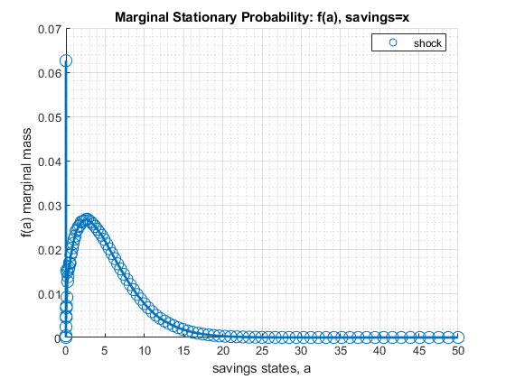
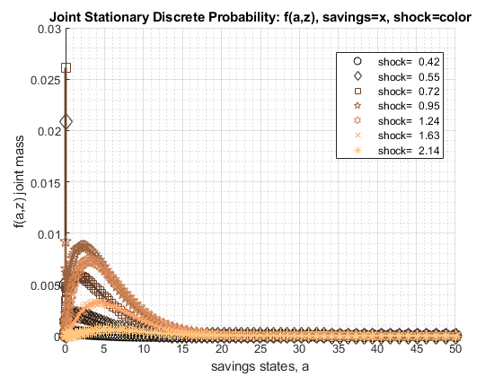
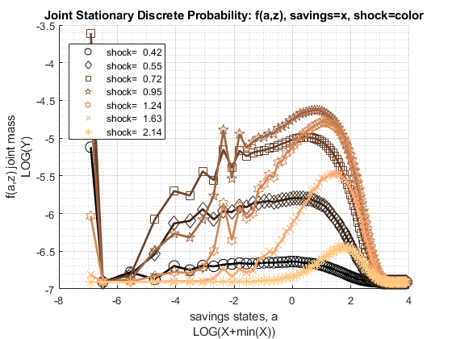
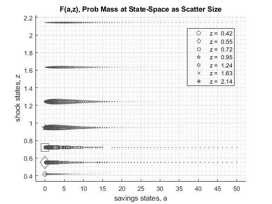
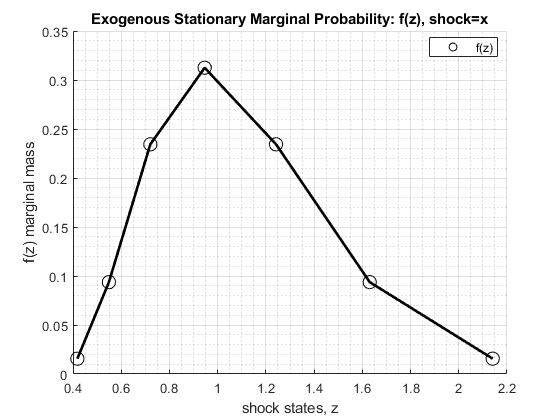
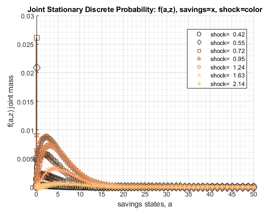
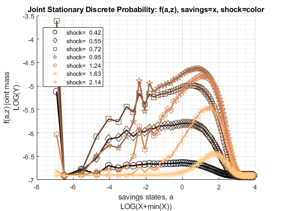
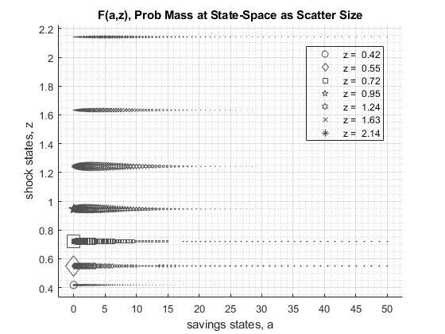
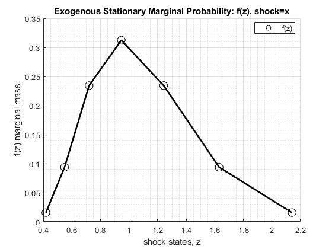

FF_DS_AZ_CTS_LOOP (Looped Continuous Choice) Dynamic Savings Distribution
Looped distributional solution for continuous asset choices. When For the AZ model, dynamic savings with Shocks. Looped distributional solution for continuous or discrete asset choices. Policy function does not map to state-space. Given Shock transition and policy function, the model generates various joint discrete random variables. Distributions over consumption, savings, cash-on-hand, income, etc...
Assign continuous mass to the closest higher and lower asset point. This function takes as inputs solutions from VFI. Either from MZOOM or BISEC that generate continuous optimal choices. The function also works with asset choices that are already on the grid.
* MP_PARAMS controls model preference, prices, shock and asset grid parameters. * MP_SUPPORT controls convergence criterion, printing and summary controls
% Some MP_PARAMS that can be modified, see below
mp_params = containers.Map('KeyType','char', 'ValueType','any');
mp_params('solu_method') = 'mzoom_vec'; % 'bisec_vec', 'vec'
mp_params('fl_crra') = 1.5;
mp_params('fl_beta') = 0.95;
mp_params('fl_w') = 1.05;
mp_params('fl_r') = 0.03;
mp_params('it_a_n') = 25;
mp_params('it_z_n') = 5; mp_support = containers.Map('KeyType','char', 'ValueType','any');
mp_support('it_maxiter_ds') = 500;
mp_support('fl_tol_ds') = 10e-5;
% printer various information
mp_support('bl_timer') = true;
mp_support('bl_print_params') = false;
mp_support('bl_print_iterinfo') = false;
% These names must match keys of mp_solu: v=value, ap=savings choice,
c=consumption, y=income, coh=cash-on-hand (income + savings),
savefraccoh = ap/coh.
% generate distributional mass for what faz joint mass, fa mass over
savings, fz, mass over shocks
mp_support('ls_dsout') = {'faz', 'fa', 'fz'};
% Solution outcomes for statistics: must include ap for distribution
mp_support('ls_slout') = {'ap', 'v', 'c', 'y', 'coh', 'savefraccoh'};
% present which distribution: only faz is allowed
mp_support_ext('ls_ddsna') = {'faz'};
% which distributional outcomes to graph: faz or fa allowed
mp_support_ext('ls_ddgrh') = {'faz', 'fa', 'fz'};[MP_DIST_OUT, MP_VALPOL, FLAG] = FF_DS_AZ_CTS_LOOP() default savings and shock model distributional simulation.
[MP_DIST_OUT, MP_VALPOL, FLAG] = FF_DS_AZ_CTS_LOOP(MP_PARAMS) change model parameters through MP_PARAMS
[MP_DIST_OUT, MP_VALPOL, FLAG] = FF_DS_AZ_CTS_LOOP(MP_PARAMS, MP_SUPPORT) change various printing, storaging, graphing, convergence etc controls through MP_SUPPORT
[MP_DIST_OUT, MP_VALPOL, FLAG] = FF_VFI_AZ_LOOP(MP_PARAMS, MP_SUPPORT, MP_SUPPORT_GRAPH) also changing graphing options, see the FF_GRAPH_GRID function for what key value paris can be specified.
[MP_DIST_OUT, MP_VALPOL, FLAG] = FF_VFI_AZ_LOOP(MP_PARAMS, MP_SUPPORT, MP_SUPPORT_GRAPH, MP_VALPOL) Solve the distributional problem given provided MP_VALPOL which is the map that is the output of VFI. This should generally not be called, the function should solve for value and policy function given new parameters.
see also FX_DS_AZ_CTS_LOOP, FF_DS_AZ_CTS_VEC, FF_DS_AZ_LOOP, FF_GRAPH_GRID
Contents
- Set Default and Parse Inputs
- Default Model Parameters
- Parse mp_params
- Generate A and Z Grids
- Default Support Parameters
- Solve the Value Function
- Initialize Matrix
- Start Timer
- Iterate and Get Distribution
- Timer Stop
- Results for Printing, and Graphing
- Show Value Function Convergence Information
- ls_ddcmd summary
- ls_ddsna summarize full
- ls_ffgrh graph
- Store Results for Output
- Distributional Statistics
function [mp_dist_out, mp_valpol, flag] = ff_ds_az_cts_loop(varargin)
Set Default and Parse Inputs
if (~isempty(varargin)) if (length(varargin) == 1) [mp_params_ext] = varargin{:}; elseif (length(varargin) == 2) [mp_params_ext, mp_support_ext] = varargin{:}; elseif (length(varargin) == 3) [mp_params_ext, mp_support_ext, mp_support_graph_ext] = varargin{:}; elseif (length(varargin) == 4) [mp_params_ext, mp_support_ext, mp_support_graph_ext, mp_valpol] = varargin{:}; end else close all; mp_params_ext = containers.Map('KeyType','char', 'ValueType','any'); mp_params_ext('solu_method') = 'bisec_vec'; % mp_params_ext('solu_method') = 'mzoom_vec'; % mp_params_ext('solu_method') = 'vec'; mp_support_ext = containers.Map('KeyType','char', 'ValueType','any'); mp_support_ext('bl_timer') = true; mp_support_ext('bl_print_params') = false; mp_support_ext('bl_print_iterinfo') = false; mp_support_ext('bl_display_final') = true; %savings, fz, mass over shocks mp_support_ext('ls_dsout') = {'faz', 'fa', 'fz'}; % Solution outcomes for statistics: must include ap for distribution mp_support_ext('ls_slout') = {'ap', 'v', 'c', 'y', 'coh', 'savefraccoh'}; % outcome for ff_container_map_display mp_support_ext('ls_ddcmd') = {'faz', 'fa', 'fz'}; % which distributional outcomes to graph mp_support_ext('ls_ddgrh') = {'faz', 'fa', 'fz'}; mp_support_ext('ddcmd_opt_it_row_n_keep') = 75; mp_support_ext('ddcmd_opt_it_col_n_keep') = 9; % %savings, fz, mass over shocks % mp_support_ext('ls_dsout') = {'faz', 'fa', 'fz'}; % % Solution outcomes for statistics: must include ap for distribution % mp_support_ext('ls_slout') = {'ap', 'v', 'c', 'y', 'coh', 'savefraccoh'}; % % outcome for ff_container_map_display % mp_support_ext('ls_ddcmd') = {'faz', 'fa', 'fz'}; % % which distributional outcomes to graph: faz or fa allowed % mp_support_ext('ls_ddgrh') = {}; % mp_support_ext('ddcmd_opt_it_row_n_keep') = 10; % mp_support_ext('ddcmd_opt_it_col_n_keep') = 9; % % mp_support_ext('ls_ffcmd') = {'v', 'ap', 'c', 'y', 'coh', 'savefraccoh'}; % mp_support_ext('ls_ffsna') = {'ap'}; % mp_support_ext('ls_ffgrh') = {}; % mp_support_ext('ls_store') = {'v', 'ap', 'c', 'y', 'coh'}; % end
Default Model Parameters
Parameters for both VFI and Dist
mp_params = containers.Map('KeyType','char', 'ValueType','any'); mp_params('solu_method') = 'bisec'; mp_params('fl_crra') = 1.5; mp_params('fl_beta') = 0.95; mp_params('fl_w') = 1.40; mp_params('fl_r') = 0.04; mp_params('fl_a_min') = 0; mp_params('fl_a_max') = 50; mp_params('it_a_n') = 100; mp_params('st_grid_type') = 'grid_powerspace'; mp_params('fl_z_persist') = 0.80; mp_params('fl_shk_std') = 0.20; mp_params('it_z_n') = 7; % override default support_map values if (length(varargin)>=1 || isempty(varargin)) mp_params = [mp_params; mp_params_ext]; end
Parse mp_params
params_group = values(mp_params, {'solu_method'});
[solu_method] = params_group{:};
params_group = values(mp_params, {'fl_a_min', 'fl_a_max', 'it_a_n', 'st_grid_type'});
[fl_a_min, fl_a_max, it_a_n, st_grid_type] = params_group{:};
params_group = values(mp_params, {'fl_z_persist', 'fl_shk_std', 'it_z_n'});
[fl_z_persist, fl_shk_std, it_z_n] = params_group{:};
Generate A and Z Grids
Same min and max and grid points
[ar_a] = ff_saveborr_grid(fl_a_min, fl_a_max, it_a_n, st_grid_type); ar_a = ar_a'; % shock vector and transition, normalize mean exp(shk) to 1 [ar_z, mt_z_trans] = ffy_rouwenhorst(fl_z_persist, fl_shk_std, it_z_n); % normalize mean of exp to 1, fl_shk_std does not shift mean. ar_z_stationary = mt_z_trans^1000; ar_z_stationary = ar_z_stationary(1,:); fl_labor_agg = ar_z_stationary*exp(ar_z); ar_z = exp(ar_z')/fl_labor_agg;
Default Support Parameters
support_map
mp_support = containers.Map('KeyType','char', 'ValueType','any'); % Iteration Control mp_support('it_maxiter_ds') = 500; mp_support('fl_tol_ds') = 1e-5; % printer various information mp_support('bl_timer') = true; mp_support('bl_print_params') = false; mp_support('bl_print_iterinfo') = false; % final stats table mp_support('bl_display_final') = true; % These names must match keys of mp_solu: %savings, fz, mass over shocks mp_support('ls_dsout') = {'faz', 'fa'}; % Solution outcomes for statistics: must include ap for distribution mp_support('ls_stout') = {'ap', 'v', 'c', 'y', 'coh', 'savefraccoh'}; % outcome for ff_container_map_display mp_support('ls_ddcmd') = {'faz', 'fa', 'fz'}; % present which distribution: only faz is allowed mp_support('ls_ddsna') = {'faz'}; % which distributional outcomes to graph: faz or fa allowed mp_support('ls_ddgrh') = {'faz', 'fa'}; mp_support('ddcmd_opt_it_row_n_keep') = 10; mp_support('ddcmd_opt_it_col_n_keep') = 9; % override default support_map values if (length(varargin)>=2 || isempty(varargin)) mp_support = [mp_support; mp_support_ext]; end % Parse mp_support params_group = values(mp_support, {'it_maxiter_ds', 'fl_tol_ds'}); [it_maxiter_ds, fl_tol_ds] = params_group{:}; params_group = values(mp_support, {'bl_timer', 'bl_print_iterinfo'}); [bl_timer, bl_print_iterinfo] = params_group{:}; params_group = values(mp_support, {'ls_stout', 'ls_dsout', 'ls_ddcmd', 'ls_ddsna', 'ls_ddgrh', ... 'ddcmd_opt_it_row_n_keep', 'ddcmd_opt_it_col_n_keep'}); [ls_stout, ls_dsout, ls_ddcmd, ls_ddsna, ls_ddgrh, ... ddcmd_opt_it_row_n_keep, ddcmd_opt_it_col_n_keep] = params_group{:};
Solve the Value Function
if (length(varargin) ~= 4) mp_support('ls_slout') = mp_support('ls_stout'); if (strcmp(solu_method, 'bisec_loop')) [mp_valpol] = ff_vfi_az_bisec_loop(mp_params, mp_support); elseif (strcmp(solu_method, 'bisec_vec')) [mp_valpol] = ff_vfi_az_bisec_vec(mp_params, mp_support); elseif (strcmp(solu_method, 'mzoom_loop')) [mp_valpol] = ff_vfi_az_mzoom_loop(mp_params, mp_support); elseif (strcmp(solu_method, 'mzoom_vec')) [mp_valpol] = ff_vfi_az_mzoom_vec(mp_params, mp_support); elseif (strcmp(solu_method, 'loop')) [mp_valpol] = ff_vfi_az_loop(mp_params, mp_support); elseif (strcmp(solu_method, 'vec')) [mp_valpol] = ff_vfi_az_vec(mp_params, mp_support); end end mt_aprime = mp_valpol('ap');
Elapsed time is 0.933280 seconds.
----------------------------------------
xxxxxxxxxxxxxxxxxxxxxxxxxxxxxxxxxxxxxxxx
CONTAINER NAME: mp_ffcmd ND Array (Matrix etc)
xxxxxxxxxxxxxxxxxxxxxxxxxxxxxxxxxxxxxxxx
i idx ndim numel rowN colN sum mean std coefvari min max
_ ___ ____ _____ ____ ____ _____ ______ ______ ________ ___ ______
ap 1 1 2 700 100 7 10019 14.313 14.543 1.0161 0 50.789
xxx TABLE:ap xxxxxxxxxxxxxxxxxx
c1 c2 c3 c4 c5 c6 c7
______ ______ ______ ________ _______ _______ ______
r1 0 0 0 0.087122 0.31433 0.69981 1.2483
r2 0 0 0 0.087724 0.31485 0.70039 1.2487
r3 0 0 0 0.090157 0.31742 0.70283 1.2512
r4 0 0 0 0.092794 0.32265 0.70474 1.2566
r5 0 0 0 0.096187 0.33145 0.70925 1.2654
r96 43.895 43.977 44.166 44.428 44.777 45.191 45.822
r97 45.08 45.163 45.352 45.613 45.962 46.377 47.015
r98 46.286 46.367 46.558 46.819 47.167 47.586 48.231
r99 47.512 47.59 47.781 48.041 48.392 48.819 49.484
r100 48.748 48.834 49.024 49.283 49.64 50.123 50.789
Initialize Matrix
mt_dist_az_init = ones(length(ar_a),it_z_n)/length(ar_a)/it_z_n; mt_dist_az_cur = mt_dist_az_init; mt_dist_az_zeros = zeros(length(ar_a),it_z_n); ar_dist_diff_norm = zeros([it_maxiter_ds, 1]); mt_dist_perc_change = zeros([it_maxiter_ds, it_z_n]);
Start Timer
if (bl_timer) tic end
Iterate and Get Distribution
initialize
it_iter = 0; % After converge, one more iteration to store results bl_continue = true; bl_converged = false; % Loop 0, continuous VFI iteration until convergence while bl_continue it_iter = it_iter + 1; % initialize empty mt_dist_az = mt_dist_az_zeros; % loop 1: over exogenous states for it_z_i = 1:it_z_n % loop 2: over endogenous states for it_a_j = 1:length(ar_a) % f(a'|a) = 1 for only one a' % get lowe rand higher index fl_aprime = mt_aprime(it_a_j, it_z_i); it_aprime_idx = find(ar_a == fl_aprime); % Find the closest asset state grid point left/right of choice if (~isempty(it_aprime_idx)) % Choice is on grid, aprime = 0 for example it_aprime_lower_idx = it_aprime_idx; it_aprime_higher_idx = it_aprime_idx; fl_aprime_lower_share = 0.5; fl_aprime_higher_share = 0.5; else % Get higher index right of choice it_aprime_lower_idx = sum(ar_a < fl_aprime); it_aprime_higher_idx = it_aprime_lower_idx + 1; % Cts choice could exceed state max if (it_aprime_lower_idx == length(ar_a)) it_aprime_higher_idx = length(ar_a); end % Get Lower index, right of choice fl_aprime_lower = ar_a(it_aprime_lower_idx); fl_aprime_higher = ar_a(it_aprime_higher_idx); % Proportion of Current Mass to send to the left closest if (fl_aprime_higher - fl_aprime_lower ~= 0) % note this has to be 1 - fraction! fl_aprime_lower_share = 1 - (fl_aprime - fl_aprime_lower)/(fl_aprime_higher - fl_aprime_lower); else fl_aprime_lower_share = 0.5; end % Proportion of Current Mass to send to the right closest fl_aprime_higher_share = 1 - fl_aprime_lower_share; end % loop 3: loop over future shocks % E_{a,z}(f(a',z'|a,z)*f(a,z)) for it_zp_q = 1:it_z_n % current probablity at (a,z) fl_cur_za_prob = mt_dist_az_cur(it_a_j, it_z_i); % f(z'|z) transition fl_ztoz_trans = mt_z_trans(it_z_i, it_zp_q); % f(a',z'|a,z)*f(a,z) fl_zfromza_lower = fl_aprime_lower_share*fl_cur_za_prob*fl_ztoz_trans; fl_zfromza_higher = fl_aprime_higher_share*fl_cur_za_prob*fl_ztoz_trans; % cumulating mt_dist_az(it_aprime_lower_idx, it_zp_q) = mt_dist_az(it_aprime_lower_idx, it_zp_q) + fl_zfromza_lower; mt_dist_az(it_aprime_higher_idx, it_zp_q) = mt_dist_az(it_aprime_higher_idx, it_zp_q) + fl_zfromza_higher; end end end % Difference across iterations fl_diff = norm(mt_dist_az-mt_dist_az_cur); if (bl_print_iterinfo) ar_dist_diff_norm(it_iter) = fl_diff; mt_dist_perc_change(it_iter, :) = sum((abs(mt_dist_az - mt_dist_az_cur) > fl_tol_ds))/(it_a_n); end % Update mt_dist_az_cur = mt_dist_az; % Update Continue Criterion if bl_converged bl_continue = false; elseif(fl_diff <= fl_tol_ds || it_iter >= it_maxiter_ds) bl_converged = true; if (fl_diff <= fl_tol_ds) flag = 1; else flag = 2; end end % Print Iteration Record if(bl_print_iterinfo) disp(['FF_DS_AZ_CTS_LOOP, it_iter:' num2str(it_iter) ... ', fl_diff:' num2str(fl_diff)]); end end
Timer Stop
if (bl_timer) toc end
Elapsed time is 0.241002 seconds.
Results for Printing, and Graphing
mp_print_graph = containers.Map('KeyType','char', 'ValueType','any'); mp_print_graph('faz') = mt_dist_az; mp_print_graph('fa') = sum(mt_dist_az,2); mp_print_graph('fz') = sum(mt_dist_az,1)';
Show Value Function Convergence Information
if (bl_print_iterinfo) it_z_select = unique(round(linspace(1,length(ar_z), 7))); ar_z_select = ar_z(it_z_select); tb_dist_alliter = array2table([ar_dist_diff_norm(1:it_iter)';... mt_dist_perc_change(1:it_iter,it_z_select)']'); ar_st_col_zs = matlab.lang.makeValidName(strcat('z=', string(ar_z_select))); cl_col_names = ['distgap', ar_st_col_zs]; cl_row_names = strcat('iter=', string(1:it_iter)); tb_dist_alliter.Properties.VariableNames = cl_col_names; tb_dist_alliter.Properties.RowNames = cl_row_names; disp('xxxxxxxxxxxxxxxxxxxxxxxxxxxxxxxxxxxxxxxx'); disp('Value Function Iteration Per Iteration Changes'); disp('xxxxxxxxxxxxxxxxxxxxxxxxxxxxxxxxxxxxxxxx'); disp('distgap = norm(mt_dist_az - mt_dist_az_cur): distributional function difference across iterations'); disp(['z1 = z1 perc change: sum((abs(mt_dist_az - mt_dist_az_cur) > fl_tol_ds))/(it_a_n);: percentage of state space'... ' points conditional on shock where the distribution mass is changing larger than fl_tol_ds across iterations']); disp(tb_dist_alliter); end
ls_ddcmd summary
if (~isempty(ls_ddcmd)) mp_ddcmd = containers.Map(ls_ddcmd, values(mp_print_graph, ls_ddcmd)); ff_container_map_display(mp_ddcmd, ddcmd_opt_it_row_n_keep, ddcmd_opt_it_col_n_keep); end
----------------------------------------
xxxxxxxxxxxxxxxxxxxxxxxxxxxxxxxxxxxxxxxx
CONTAINER NAME: mp_ddcmd ND Array (Matrix etc)
xxxxxxxxxxxxxxxxxxxxxxxxxxxxxxxxxxxxxxxx
i idx ndim numel rowN colN sum mean std coefvari min max
_ ___ ____ _____ ____ ____ ___ _________ _________ ________ __________ ________
fa 1 1 2 100 100 1 1 0.01 0.011225 1.1225 1.4576e-10 0.062597
faz 2 2 2 700 100 7 1 0.0014286 0.0024952 1.7467 1.494e-14 0.02612
fz 3 3 2 7 7 1 1 0.14286 0.11742 0.82196 0.015625 0.3125
xxx TABLE:fa xxxxxxxxxxxxxxxxxx
c1
__________
r1 0.062597
r2 8.8438e-08
r3 0.00037553
r4 0.0023938
r5 0.0048036
r6 0.0045115
r7 0.006724
r8 0.0070875
r9 0.015176
r10 0.0091101
r11 0.014749
r12 0.012668
r13 0.013729
r14 0.015374
r15 0.015872
r16 0.016882
r17 0.016761
r18 0.018598
r19 0.019141
r20 0.02025
r21 0.021227
r22 0.022194
r23 0.022939
r24 0.024078
r25 0.024416
r26 0.025088
r27 0.02538
r28 0.026139
r29 0.026284
r30 0.026412
r31 0.026675
r32 0.026768
r33 0.026382
r34 0.026075
r35 0.025643
r36 0.025113
r37 0.024478
r38 0.023765
r63 0.0014895
r64 0.0012026
r65 0.00096468
r66 0.00076582
r67 0.00060272
r68 0.00046965
r69 0.00036168
r70 0.00027632
r71 0.00020832
r72 0.00015542
r73 0.00011452
r74 8.3112e-05
r75 5.9778e-05
r76 4.2296e-05
r77 2.9574e-05
r78 2.0315e-05
r79 1.3673e-05
r80 9.1164e-06
r81 6.0001e-06
r82 3.8924e-06
r83 2.4833e-06
r84 1.5661e-06
r85 9.7141e-07
r86 5.9333e-07
r87 3.5669e-07
r88 2.1141e-07
r89 1.2295e-07
r90 7.0392e-08
r91 3.9624e-08
r92 2.1934e-08
r93 1.1901e-08
r94 6.359e-09
r95 3.3287e-09
r96 1.7133e-09
r97 8.6112e-10
r98 4.265e-10
r99 2.1152e-10
r100 1.4576e-10
xxx TABLE:faz xxxxxxxxxxxxxxxxxx
c1 c2 c3 c4 c5 c6 c7
__________ __________ __________ __________ __________ __________ __________
r1 0.0049772 0.020826 0.02612 0.0091745 0.0013976 9.8743e-05 2.6641e-06
r2 4.7e-08 3.1333e-08 8.7036e-09 1.2894e-09 1.0745e-10 4.7757e-12 8.8438e-14
r3 0.00013776 0.00010558 9.4194e-05 3.2609e-05 5.0257e-06 3.5945e-07 9.7971e-09
r4 3.4927e-05 0.00045021 0.0012968 0.00052171 8.3944e-05 6.1073e-06 1.6781e-07
r5 0.00023517 0.0011736 0.0023399 0.00090153 0.00014274 1.0299e-05 2.8157e-07
r6 0.0001714 0.0012493 0.0021496 0.00080582 0.00012613 9.0428e-06 2.4622e-07
r7 0.00024154 0.0016296 0.0033423 0.0012909 0.00020452 1.4761e-05 4.0357e-07
r8 0.00023066 0.0012936 0.0028601 0.0021341 0.00051674 5.052e-05 1.7468e-06
r9 0.00025788 0.0015558 0.0047955 0.0065261 0.0018409 0.00019253 6.9126e-06
r10 0.00026895 0.0015266 0.003553 0.0029462 0.0007392 7.3508e-05 2.5669e-06
r11 0.00028643 0.0017355 0.0046969 0.006127 0.0017176 0.00017924 6.428e-06
r12 0.00027582 0.0016998 0.0043073 0.0049035 0.0013381 0.00013812 4.9244e-06
r13 0.00027501 0.0018368 0.0045518 0.0054134 0.0014919 0.00015463 5.5259e-06
r14 0.00028247 0.0018612 0.0046767 0.005759 0.0024277 0.00035047 1.6187e-05
r15 0.00029076 0.0019001 0.004737 0.0058568 0.0026683 0.00040062 1.8915e-05
r16 0.0002947 0.0019285 0.0048803 0.0061327 0.0031285 0.00049341 2.3902e-05
r17 0.00029038 0.0018759 0.0049368 0.0061508 0.0030166 0.00046823 2.25e-05
r18 0.00029874 0.0019274 0.0051232 0.0067028 0.0038727 0.00064166 3.1929e-05
r19 0.00030105 0.0019603 0.0052576 0.0068671 0.0039664 0.00074629 4.2605e-05
r20 0.0003029 0.0019877 0.0053597 0.0070741 0.0045009 0.00096418 6.0486e-05
r21 0.00031201 0.0020217 0.0055331 0.0075301 0.0047459 0.0010199 6.4254e-05
r22 0.00031006 0.0020332 0.0056332 0.0077921 0.0050916 0.0012482 8.5699e-05
r23 0.00030854 0.0020403 0.0057017 0.0080318 0.0054185 0.0013451 9.3343e-05
r24 0.00030079 0.0020398 0.0057758 0.0083363 0.0059261 0.00158 0.00011943
r25 0.00029148 0.0020267 0.0057817 0.0083913 0.0060422 0.0017429 0.00014031
r26 0.000288 0.0020172 0.0058013 0.0085478 0.0063459 0.0019201 0.0001678
r27 0.00028289 0.0019963 0.0057899 0.0086191 0.0064984 0.002012 0.00018107
r28 0.00027748 0.0019709 0.0057709 0.0087254 0.0067951 0.0023672 0.00023242
r29 0.00027083 0.0019404 0.00572 0.0087569 0.0069395 0.002404 0.00025227
r30 0.0002633 0.0018963 0.0056452 0.0087575 0.0070668 0.0025136 0.00026893
r31 0.00025535 0.0018577 0.0055515 0.0087281 0.0072322 0.0027286 0.0003216
r32 0.00024518 0.0017981 0.0054223 0.0086404 0.0073545 0.0029567 0.00035086
r33 0.00023689 0.0017582 0.0052782 0.0084848 0.0073121 0.0029238 0.00038854
r34 0.00022318 0.0016682 0.0051025 0.008309 0.0072989 0.003061 0.00041221
r35 0.00021235 0.001595 0.0049219 0.0081138 0.0072491 0.0031199 0.00043056
r36 0.00019768 0.0014883 0.0047173 0.007883 0.0071566 0.0031727 0.0004973
r37 0.00018666 0.0014138 0.0045177 0.0076302 0.0070368 0.0031951 0.00049747
r38 0.00017521 0.0013354 0.004304 0.007354 0.0068803 0.0031982 0.00051761
r63 4.757e-06 4.3293e-05 0.00017006 0.00037004 0.0004706 0.00033059 0.00010021
r64 3.7138e-06 3.3951e-05 0.00013439 0.00029563 0.00038029 0.00027117 8.3496e-05
r65 2.8755e-06 2.6434e-05 0.0001054 0.00023497 0.00030583 0.0002204 6.8766e-05
r66 2.208e-06 2.0408e-05 8.2004e-05 0.0001849 0.00024289 0.0001773 5.6124e-05
r67 1.6815e-06 1.5652e-05 6.3375e-05 0.00014414 0.00019144 0.00014112 4.5311e-05
r68 1.266e-06 1.188e-05 4.8498e-05 0.0001112 0.00014916 0.00011142 3.6234e-05
r69 9.4277e-07 8.9105e-06 3.6672e-05 8.4842e-05 0.00011487 8.6821e-05 2.8614e-05
r70 6.9342e-07 6.6072e-06 2.747e-05 6.4255e-05 8.785e-05 6.7064e-05 2.238e-05
r71 5.0494e-07 4.8495e-06 2.032e-05 4.7938e-05 6.6282e-05 5.1146e-05 1.728e-05
r72 3.6235e-07 3.5104e-06 1.4862e-05 3.5421e-05 4.9451e-05 3.8611e-05 1.3206e-05
r73 2.5706e-07 2.5118e-06 1.0734e-05 2.5839e-05 3.6453e-05 2.8765e-05 9.9579e-06
r74 1.7966e-07 1.7715e-06 7.6397e-06 1.8556e-05 2.6431e-05 2.1125e-05 7.4096e-06
r75 1.2402e-07 1.2335e-06 5.3742e-06 1.3199e-05 1.9027e-05 1.5368e-05 5.4514e-06
r76 8.433e-08 8.4693e-07 3.727e-06 9.2421e-06 1.3457e-05 1.0989e-05 3.9501e-06
r77 5.6538e-08 5.7206e-07 2.5442e-06 6.3871e-06 9.4165e-06 7.7752e-06 2.8224e-06
r78 3.7411e-08 3.8155e-07 1.7119e-06 4.3355e-06 6.4568e-06 5.4057e-06 1.9858e-06
r79 2.4421e-08 2.5084e-07 1.1333e-06 2.893e-06 4.3487e-06 3.6717e-06 1.351e-06
r80 1.5748e-08 1.6303e-07 7.4286e-07 1.9103e-06 2.8948e-06 2.4678e-06 9.2183e-07
r81 9.9962e-09 1.0435e-07 4.795e-07 1.2444e-06 1.9027e-06 1.6385e-06 6.2058e-07
r82 6.2585e-09 6.5902e-08 3.0544e-07 7.9895e-07 1.2325e-06 1.0722e-06 4.1112e-07
r83 3.8545e-09 4.0939e-08 1.9132e-07 5.0487e-07 7.8513e-07 6.8925e-07 2.6797e-07
r84 2.3328e-09 2.5015e-08 1.1823e-07 3.1478e-07 4.9416e-07 4.389e-07 1.7265e-07
r85 1.3907e-09 1.5056e-08 7.1899e-08 1.932e-07 3.0624e-07 2.7426e-07 1.0936e-07
r86 8.169e-10 8.9334e-09 4.3129e-08 1.1677e-07 1.865e-07 1.6892e-07 6.8269e-08
r87 4.7181e-10 5.2078e-09 2.5387e-08 6.9321e-08 1.1186e-07 1.0247e-07 4.1978e-08
r88 2.6826e-10 2.9911e-09 1.4764e-08 4.0709e-08 6.6194e-08 6.109e-08 2.5397e-08
r89 1.4987e-10 1.6867e-09 8.4099e-09 2.3382e-08 3.8387e-08 3.5844e-08 1.5094e-08
r90 8.2647e-11 9.3789e-10 4.7256e-09 1.324e-08 2.1914e-08 2.0675e-08 8.8169e-09
r91 4.4909e-11 5.1406e-10 2.6088e-09 7.3681e-09 1.2301e-08 1.171e-08 5.0768e-09
r92 2.3958e-11 2.7686e-10 1.4176e-09 4.0345e-09 6.7923e-09 6.5259e-09 2.8633e-09
r93 1.2553e-11 1.4619e-10 7.5349e-10 2.1622e-09 3.6706e-09 3.5648e-09 1.5915e-09
r94 6.4464e-12 7.5945e-11 3.951e-10 1.1429e-09 1.956e-09 1.9167e-09 8.6601e-10
r95 3.2331e-12 3.8629e-11 2.0276e-10 5.9076e-10 1.0194e-09 1.0096e-09 4.6432e-10
r96 1.567e-12 1.917e-11 1.021e-10 3.0065e-10 5.2325e-10 5.2308e-10 2.4352e-10
r97 7.1983e-13 9.2184e-12 5.0268e-11 1.4959e-10 2.62e-10 2.6427e-10 1.2505e-10
r98 2.9475e-13 4.1679e-12 2.4171e-11 7.3844e-11 1.2984e-10 1.3113e-10 6.3048e-11
r99 9.2542e-14 1.5969e-12 1.08e-11 3.6438e-11 6.6168e-11 6.5206e-11 3.1223e-11
r100 1.494e-14 3.6761e-13 3.4834e-12 1.6456e-11 4.1626e-11 5.4312e-11 2.9501e-11
xxx TABLE:fz xxxxxxxxxxxxxxxxxx
c1
________
r1 0.015625
r2 0.09375
r3 0.23438
r4 0.3125
r5 0.23438
r6 0.09375
r7 0.015625
ls_ddsna summarize full
if (~isempty(ls_ddsna)) % container map subseting mp_ddsna = containers.Map(ls_ddsna, values(mp_print_graph, ls_ddsna)); % ff_summ_nd_array parameters it_aggd = 0; bl_row = 1; ar_permute = [2,1]; ar_st_stats = ["mean"]; bl_print_table = true; cl_mp_datasetdesc = {}; cl_mp_datasetdesc{1} = containers.Map({'name', 'labval'}, {'a', ar_a}); cl_mp_datasetdesc{2} = containers.Map({'name', 'labval'}, {'z', ar_z}); % summarize param_map_keys = keys(mp_ddsna); param_map_vals = values(mp_ddsna); for i = 1:length(mp_ddsna) st_mt_name = param_map_keys{i}; mt_cur = param_map_vals{i}; st_title = ['FF_DS_AZ_CTS_LOOP, outcome=' st_mt_name]; ff_summ_nd_array(st_title, mt_cur, ... bl_print_table, ar_st_stats, it_aggd, bl_row, ... cl_mp_datasetdesc, ar_permute); end end
xxx FF_DS_AZ_CTS_LOOP, outcome=faz xxxxxxxxxxxxxxxxxxxxxxxxxxx
group a mean_z_0_41816 mean_z_0_54897 mean_z_0_72069 mean_z_0_94612 mean_z_1_2421 mean_z_1_6306 mean_z_2_1407
_____ __________ ______________ ______________ ______________ ______________ _____________ _____________ _____________
1 0 0.0049772 0.020826 0.02612 0.0091745 0.0013976 9.8743e-05 2.6641e-06
2 0.00051272 4.7e-08 3.1333e-08 8.7036e-09 1.2894e-09 1.0745e-10 4.7757e-12 8.8438e-14
3 0.0029004 0.00013776 0.00010558 9.4194e-05 3.2609e-05 5.0257e-06 3.5945e-07 9.7971e-09
4 0.0079925 3.4927e-05 0.00045021 0.0012968 0.00052171 8.3944e-05 6.1073e-06 1.6781e-07
5 0.016407 0.00023517 0.0011736 0.0023399 0.00090153 0.00014274 1.0299e-05 2.8157e-07
6 0.028662 0.0001714 0.0012493 0.0021496 0.00080582 0.00012613 9.0428e-06 2.4622e-07
7 0.045213 0.00024154 0.0016296 0.0033423 0.0012909 0.00020452 1.4761e-05 4.0357e-07
8 0.06647 0.00023066 0.0012936 0.0028601 0.0021341 0.00051674 5.052e-05 1.7468e-06
9 0.092813 0.00025788 0.0015558 0.0047955 0.0065261 0.0018409 0.00019253 6.9126e-06
10 0.12459 0.00026895 0.0015266 0.003553 0.0029462 0.0007392 7.3508e-05 2.5669e-06
11 0.16214 0.00028643 0.0017355 0.0046969 0.006127 0.0017176 0.00017924 6.428e-06
12 0.20576 0.00027582 0.0016998 0.0043073 0.0049035 0.0013381 0.00013812 4.9244e-06
13 0.25576 0.00027501 0.0018368 0.0045518 0.0054134 0.0014919 0.00015463 5.5259e-06
14 0.31242 0.00028247 0.0018612 0.0046767 0.005759 0.0024277 0.00035047 1.6187e-05
15 0.37601 0.00029076 0.0019001 0.004737 0.0058568 0.0026683 0.00040062 1.8915e-05
16 0.4468 0.0002947 0.0019285 0.0048803 0.0061327 0.0031285 0.00049341 2.3902e-05
17 0.52503 0.00029038 0.0018759 0.0049368 0.0061508 0.0030166 0.00046823 2.25e-05
18 0.61095 0.00029874 0.0019274 0.0051232 0.0067028 0.0038727 0.00064166 3.1929e-05
19 0.7048 0.00030105 0.0019603 0.0052576 0.0068671 0.0039664 0.00074629 4.2605e-05
20 0.8068 0.0003029 0.0019877 0.0053597 0.0070741 0.0045009 0.00096418 6.0486e-05
21 0.91719 0.00031201 0.0020217 0.0055331 0.0075301 0.0047459 0.0010199 6.4254e-05
22 1.0362 0.00031006 0.0020332 0.0056332 0.0077921 0.0050916 0.0012482 8.5699e-05
23 1.164 0.00030854 0.0020403 0.0057017 0.0080318 0.0054185 0.0013451 9.3343e-05
24 1.3008 0.00030079 0.0020398 0.0057758 0.0083363 0.0059261 0.00158 0.00011943
25 1.4468 0.00029148 0.0020267 0.0057817 0.0083913 0.0060422 0.0017429 0.00014031
26 1.6023 0.000288 0.0020172 0.0058013 0.0085478 0.0063459 0.0019201 0.0001678
27 1.7673 0.00028289 0.0019963 0.0057899 0.0086191 0.0064984 0.002012 0.00018107
28 1.9422 0.00027748 0.0019709 0.0057709 0.0087254 0.0067951 0.0023672 0.00023242
29 2.127 0.00027083 0.0019404 0.00572 0.0087569 0.0069395 0.002404 0.00025227
30 2.3221 0.0002633 0.0018963 0.0056452 0.0087575 0.0070668 0.0025136 0.00026893
31 2.5275 0.00025535 0.0018577 0.0055515 0.0087281 0.0072322 0.0027286 0.0003216
32 2.7434 0.00024518 0.0017981 0.0054223 0.0086404 0.0073545 0.0029567 0.00035086
33 2.97 0.00023689 0.0017582 0.0052782 0.0084848 0.0073121 0.0029238 0.00038854
34 3.2075 0.00022318 0.0016682 0.0051025 0.008309 0.0072989 0.003061 0.00041221
35 3.456 0.00021235 0.001595 0.0049219 0.0081138 0.0072491 0.0031199 0.00043056
36 3.7158 0.00019768 0.0014883 0.0047173 0.007883 0.0071566 0.0031727 0.0004973
37 3.9869 0.00018666 0.0014138 0.0045177 0.0076302 0.0070368 0.0031951 0.00049747
38 4.2696 0.00017521 0.0013354 0.004304 0.007354 0.0068803 0.0031982 0.00051761
39 4.564 0.00016378 0.0012555 0.0040827 0.0070612 0.0067455 0.0032537 0.00053683
40 4.8702 0.00015237 0.0011746 0.0038469 0.0067204 0.0065044 0.0031827 0.00059378
41 5.1884 0.0001411 0.0010931 0.0036093 0.0063662 0.0062513 0.003129 0.00056708
42 5.5188 0.00013017 0.0010112 0.0033644 0.0059965 0.0059679 0.0030368 0.00057022
43 5.8615 0.00011948 0.00093196 0.0031244 0.0056215 0.0056655 0.002953 0.00058604
44 6.2166 0.00010781 0.00085117 0.0028799 0.0052358 0.0053494 0.002837 0.00057911
45 6.5844 9.6456e-05 0.00077475 0.0026437 0.0048499 0.0050215 0.0027097 0.00056256
46 6.9649 8.5923e-05 0.00070008 0.0024109 0.00447 0.0046898 0.0025877 0.00057216
47 7.3583 7.6676e-05 0.00062926 0.0021852 0.0040924 0.0043438 0.002437 0.0005431
48 7.7647 6.798e-05 0.00056183 0.0019666 0.0037221 0.0040065 0.0022823 0.00051739
49 8.1844 5.9934e-05 0.00049831 0.001759 0.0033627 0.0036661 0.0021279 0.00050143
50 8.6173 5.2434e-05 0.00043874 0.0015606 0.0030131 0.0033307 0.0019665 0.00046938
51 9.0637 4.5616e-05 0.00038365 0.0013749 0.0026827 0.0029992 0.0018009 0.00044073
52 9.5237 3.9411e-05 0.00033304 0.0012017 0.0023693 0.002692 0.0016431 0.00041153
53 9.9975 3.3853e-05 0.00028717 0.0010414 0.0020673 0.0023674 0.0014663 0.00037703
54 10.485 2.8911e-05 0.00024629 0.00089797 0.0017985 0.0020867 0.0013124 0.0003454
55 10.987 2.4541e-05 0.00020987 0.00076702 0.0015441 0.001815 0.0011626 0.00031229
56 11.502 2.0677e-05 0.000178 0.00065308 0.0013117 0.0015395 0.0010144 0.00027977
57 12.032 1.7288e-05 0.0001503 0.00055652 0.0011263 0.0013297 0.00088397 0.00025007
58 12.577 1.4308e-05 0.0001256 0.00047024 0.00096332 0.001149 0.00076491 0.00021762
59 13.136 1.1695e-05 0.00010365 0.00039314 0.00081713 0.00099154 0.00066096 0.00019038
60 13.709 9.4852e-06 8.4667e-05 0.0003238 0.00067928 0.000834 0.00056429 0.00016405
61 14.298 7.5969e-06 6.8318e-05 0.00026379 0.00056047 0.00069622 0.00047682 0.00014055
62 14.901 6.0396e-06 5.4633e-05 0.00021271 0.00045665 0.00057392 0.00039852 0.00011919
63 15.519 4.757e-06 4.3293e-05 0.00017006 0.00037004 0.0004706 0.00033059 0.00010021
64 16.152 3.7138e-06 3.3951e-05 0.00013439 0.00029563 0.00038029 0.00027117 8.3496e-05
65 16.801 2.8755e-06 2.6434e-05 0.0001054 0.00023497 0.00030583 0.0002204 6.8766e-05
66 17.465 2.208e-06 2.0408e-05 8.2004e-05 0.0001849 0.00024289 0.0001773 5.6124e-05
67 18.144 1.6815e-06 1.5652e-05 6.3375e-05 0.00014414 0.00019144 0.00014112 4.5311e-05
68 18.839 1.266e-06 1.188e-05 4.8498e-05 0.0001112 0.00014916 0.00011142 3.6234e-05
69 19.55 9.4277e-07 8.9105e-06 3.6672e-05 8.4842e-05 0.00011487 8.6821e-05 2.8614e-05
70 20.277 6.9342e-07 6.6072e-06 2.747e-05 6.4255e-05 8.785e-05 6.7064e-05 2.238e-05
71 21.02 5.0494e-07 4.8495e-06 2.032e-05 4.7938e-05 6.6282e-05 5.1146e-05 1.728e-05
72 21.778 3.6235e-07 3.5104e-06 1.4862e-05 3.5421e-05 4.9451e-05 3.8611e-05 1.3206e-05
73 22.553 2.5706e-07 2.5118e-06 1.0734e-05 2.5839e-05 3.6453e-05 2.8765e-05 9.9579e-06
74 23.345 1.7966e-07 1.7715e-06 7.6397e-06 1.8556e-05 2.6431e-05 2.1125e-05 7.4096e-06
75 24.152 1.2402e-07 1.2335e-06 5.3742e-06 1.3199e-05 1.9027e-05 1.5368e-05 5.4514e-06
76 24.977 8.433e-08 8.4693e-07 3.727e-06 9.2421e-06 1.3457e-05 1.0989e-05 3.9501e-06
77 25.818 5.6538e-08 5.7206e-07 2.5442e-06 6.3871e-06 9.4165e-06 7.7752e-06 2.8224e-06
78 26.675 3.7411e-08 3.8155e-07 1.7119e-06 4.3355e-06 6.4568e-06 5.4057e-06 1.9858e-06
79 27.55 2.4421e-08 2.5084e-07 1.1333e-06 2.893e-06 4.3487e-06 3.6717e-06 1.351e-06
80 28.441 1.5748e-08 1.6303e-07 7.4286e-07 1.9103e-06 2.8948e-06 2.4678e-06 9.2183e-07
81 29.35 9.9962e-09 1.0435e-07 4.795e-07 1.2444e-06 1.9027e-06 1.6385e-06 6.2058e-07
82 30.276 6.2585e-09 6.5902e-08 3.0544e-07 7.9895e-07 1.2325e-06 1.0722e-06 4.1112e-07
83 31.219 3.8545e-09 4.0939e-08 1.9132e-07 5.0487e-07 7.8513e-07 6.8925e-07 2.6797e-07
84 32.179 2.3328e-09 2.5015e-08 1.1823e-07 3.1478e-07 4.9416e-07 4.389e-07 1.7265e-07
85 33.157 1.3907e-09 1.5056e-08 7.1899e-08 1.932e-07 3.0624e-07 2.7426e-07 1.0936e-07
86 34.153 8.169e-10 8.9334e-09 4.3129e-08 1.1677e-07 1.865e-07 1.6892e-07 6.8269e-08
87 35.166 4.7181e-10 5.2078e-09 2.5387e-08 6.9321e-08 1.1186e-07 1.0247e-07 4.1978e-08
88 36.198 2.6826e-10 2.9911e-09 1.4764e-08 4.0709e-08 6.6194e-08 6.109e-08 2.5397e-08
89 37.247 1.4987e-10 1.6867e-09 8.4099e-09 2.3382e-08 3.8387e-08 3.5844e-08 1.5094e-08
90 38.314 8.2647e-11 9.3789e-10 4.7256e-09 1.324e-08 2.1914e-08 2.0675e-08 8.8169e-09
91 39.399 4.4909e-11 5.1406e-10 2.6088e-09 7.3681e-09 1.2301e-08 1.171e-08 5.0768e-09
92 40.503 2.3958e-11 2.7686e-10 1.4176e-09 4.0345e-09 6.7923e-09 6.5259e-09 2.8633e-09
93 41.625 1.2553e-11 1.4619e-10 7.5349e-10 2.1622e-09 3.6706e-09 3.5648e-09 1.5915e-09
94 42.765 6.4464e-12 7.5945e-11 3.951e-10 1.1429e-09 1.956e-09 1.9167e-09 8.6601e-10
95 43.924 3.2331e-12 3.8629e-11 2.0276e-10 5.9076e-10 1.0194e-09 1.0096e-09 4.6432e-10
96 45.102 1.567e-12 1.917e-11 1.021e-10 3.0065e-10 5.2325e-10 5.2308e-10 2.4352e-10
97 46.298 7.1983e-13 9.2184e-12 5.0268e-11 1.4959e-10 2.62e-10 2.6427e-10 1.2505e-10
98 47.513 2.9475e-13 4.1679e-12 2.4171e-11 7.3844e-11 1.2984e-10 1.3113e-10 6.3048e-11
99 48.747 9.2542e-14 1.5969e-12 1.08e-11 3.6438e-11 6.6168e-11 6.5206e-11 3.1223e-11
100 50 1.494e-14 3.6761e-13 3.4834e-12 1.6456e-11 4.1626e-11 5.4312e-11 2.9501e-11
ls_ffgrh graph
if (~isempty(ls_ddgrh)) % container map subseting mp_ddgrh = containers.Map(ls_ddgrh, values(mp_print_graph, ls_ddgrh)); % container map settings mp_support_graph = containers.Map('KeyType', 'char', 'ValueType', 'any'); mp_support_graph('cl_st_xtitle') = {'savings states, a'}; mp_support_graph('st_legend_loc') = 'best'; mp_support_graph('bl_graph_logy') = true; % do not log mp_support_graph('st_rowvar_name') = 'shock='; mp_support_graph('it_legend_select') = 11; % how many shock legends to show mp_support_graph('st_rounding') = '6.2f'; % format shock legend % Overide graph options here with external parameters if (length(varargin)>=3) mp_support_graph = [mp_support_graph; mp_support_graph_ext]; end % summarize param_map_keys = keys(mp_ddgrh); param_map_vals = values(mp_ddgrh); for i = 1:length(mp_ddgrh) % Get matrix and key st_mt_name = param_map_keys{i}; mt_cur = param_map_vals{i}; if (strcmp(st_mt_name, 'faz')) % Color mp_support_graph('cl_colors') = 'copper'; % any predefined matlab colormap % Update Title and Y label mp_support_graph('cl_st_graph_title') = {['Joint Stationary Discrete Probability: f(a,z), savings=x, shock=color']}; mp_support_graph('cl_st_ytitle') = {['f(a,z) joint mass']}; mp_support_graph('cl_st_xtitle') = {'savings states, a'}; % Call function ff_graph_grid(mt_cur', ar_z, ar_a, mp_support_graph); % Show F(a,z) as Scatter Size % Color mp_support_graph('cl_colors') = 'black'; % any predefined matlab colormap % Update Title and Y label mp_support_graph('cl_st_graph_title') = {['F(a,z), Prob Mass at State-Space as Scatter Size']}; mp_support_graph('cl_st_ytitle') = {'shock states, z'}; mp_support_graph('cl_st_xtitle') = {'savings states, a'}; mp_support_graph('st_rowvar_name') = 'z ='; mp_support_graph('bl_graph_logy') = false; % Call function distributional ff_graph_grid(mt_cur', ar_z, ar_a, mp_support_graph, 'dist'); elseif (strcmp(st_mt_name, 'fa')) % Color mp_support_graph('cl_colors') = 'lines'; % any predefined matlab colormap % Update Title and Y label mp_support_graph('cl_st_graph_title') = {['Marginal Stationary Probability: f(a), savings=x']}; mp_support_graph('cl_st_ytitle') = {['f(a) marginal mass']}; mp_support_graph('cl_st_xtitle') = {'savings states, a'}; % Call function ff_graph_grid(mt_cur', ["shock"], ar_a, mp_support_graph); elseif (strcmp(st_mt_name, 'fz')) % Color mp_support_graph('cl_colors') = 'gray'; % any predefined matlab colormap % Update Title and Y label mp_support_graph('cl_st_graph_title') = {['Exogenous Stationary Marginal Probability: f(z), shock=x']}; mp_support_graph('cl_st_ytitle') = {['f(z) marginal mass']}; mp_support_graph('cl_st_xtitle') = {'shock states, z'}; % Call function ff_graph_grid(mt_cur', ["f(z)"], ar_z, mp_support_graph); end end end
    
    Store Results for Output
mp_dist_out = containers.Map(ls_dsout, values(mp_print_graph, ls_dsout));
Distributional Statistics
if (~isempty(ls_stout)) % container map subseting mp_slout = containers.Map(ls_stout, values(mp_valpol, ls_stout)); mp_cl_ar_xyz_of_s = containers.Map('KeyType','char', 'ValueType','any'); param_map_keys = keys(mp_slout); param_map_vals = values(mp_slout); for i = 1:length(mp_slout) st_mt_name = param_map_keys{i}; mt_cur = param_map_vals{i}; mp_cl_ar_xyz_of_s(st_mt_name) = {mt_cur(:), zeros(1)}; end % Add Names to list mp_cl_ar_xyz_of_s('ar_st_y_name') = string(ls_stout); % controls mp_support_simustats = containers.Map('KeyType','char', 'ValueType','any'); mp_support_simustats('ar_fl_percentiles') = [0.01 0.1 1 5 10 20 25 30 40 50 60 70 75 80 90 95 99 99.9 99.99]; mp_support_simustats('bl_display_final') = true; mp_support_simustats('bl_display_detail') = false; mp_support_simustats('bl_display_drvm2outcomes') = false; mp_support_simustats('bl_display_drvstats') = false; mp_support_simustats('bl_display_drvm2covcor') = false; mp_support_simustats = [mp_support_simustats; mp_support]; % Call Function mp_cl_mt_xyz_of_s = ff_simu_stats(mt_dist_az(:), mp_cl_ar_xyz_of_s, mp_support_simustats); mp_dist_out('mp_cl_mt_xyz_of_s') = mp_cl_mt_xyz_of_s; end
xxx tb_outcomes: all stats xxx
OriginalVariableNames ap v c y coh savefraccoh
______________________ __________ __________ __________ __________ __________ ___________
{'mean' } 3.2216 6.9329 1.5295 1.5289 4.7511 0.52357
{'sd' } 3.2562 2.1508 0.34914 0.5307 3.5687 0.25504
{'coefofvar' } 1.0107 0.31024 0.22827 0.34711 0.75113 0.48712
{'min' } 0 1.7008 0.58543 0.58543 0.58543 0
{'max' } 50.789 19.213 4.21 4.9969 54.997 0.92702
{'pYis0' } 0.062608 0 0 0 0 0.062608
{'pYls0' } 0 0 0 0 0 0
{'pYgr0' } 0.93739 1 1 1 1 0.93739
{'pYisMINY' } 0.062608 0.0049772 0.0049772 0.0049772 0.0049772 0.062608
{'pYisMAXY' } 2.9501e-11 2.9501e-11 3.1223e-11 2.9501e-11 2.9501e-11 1.494e-14
{'p0_01' } 0 1.7008 0.58543 0.58543 0.58543 0
{'p0_1' } 0 1.7008 0.58543 0.58543 0.58543 0
{'p1' } 0 2.9492 0.76855 0.62688 0.76855 0
{'p5' } 0 3.4945 0.97884 0.78105 1.009 0
{'p10' } 0.092835 4.1716 1.0603 0.97609 1.223 0.078835
{'p20' } 0.47609 5.1938 1.2588 1.0456 1.7419 0.27652
{'p25' } 0.7311 5.3812 1.3008 1.094 2.0576 0.35312
{'p30' } 0.97803 5.6276 1.351 1.188 2.3618 0.42581
{'p40' } 1.5512 6.3139 1.4528 1.349 3.0158 0.51932
{'p50' } 2.233 6.8328 1.5245 1.4175 3.7588 0.59714
{'p60' } 3.0801 7.416 1.6192 1.5453 4.6604 0.66085
{'p70' } 4.105 8.0461 1.7025 1.7909 5.7649 0.70987
{'p75' } 4.6992 8.4292 1.7544 1.84 6.4292 0.73355
{'p80' } 5.4329 8.7432 1.8159 1.9097 7.3478 0.75277
{'p90' } 7.7004 9.7559 1.9663 2.3407 9.5263 0.79745
{'p95' } 9.7011 10.662 2.1066 2.5036 11.722 0.82522
{'p99' } 14.279 12.148 2.3613 3.1795 16.608 0.85983
{'p99_9' } 19.899 13.734 2.6792 3.5223 22.615 0.8829
{'p99_99' } 25.265 14.885 2.9563 3.7789 28.175 0.8962
{'fl_cov_ap' } 10.603 6.2617 1.0053 1.0453 11.608 0.65544
{'fl_cor_ap' } 1 0.89408 0.8843 0.60489 0.99896 0.78925
{'fl_cov_v' } 6.2617 4.626 0.74802 0.96794 7.0097 0.47179
{'fl_cor_v' } 0.89408 1 0.99613 0.848 0.91325 0.86007
{'fl_cov_c' } 1.0053 0.74802 0.1219 0.15425 1.1272 0.078595
{'fl_cor_c' } 0.8843 0.99613 1 0.83252 0.9047 0.88265
{'fl_cov_y' } 1.0453 0.96794 0.15425 0.28164 1.1995 0.078136
{'fl_cor_y' } 0.60489 0.848 0.83252 1 0.63337 0.57729
{'fl_cov_coh' } 11.608 7.0097 1.1272 1.1995 12.735 0.73404
{'fl_cor_coh' } 0.99896 0.91325 0.9047 0.63337 1 0.8065
{'fl_cov_savefraccoh'} 0.65544 0.47179 0.078595 0.078136 0.73404 0.065046
{'fl_cor_savefraccoh'} 0.78925 0.86007 0.88265 0.57729 0.8065 1
{'fracByP0_01' } 0 0.001221 0.0019051 0.0019058 0.00061329 0
{'fracByP0_1' } 0 0.001221 0.0019051 0.0019058 0.00061329 0
{'fracByP1' } 0 0.011511 0.013437 0.0039104 0.0042425 0
{'fracByP5' } 0 0.021279 0.026546 0.024488 0.012268 0
{'fracByP10' } 0.0006892 0.05109 0.059758 0.051739 0.020676 0.0036864
{'fracByP20' } 0.0099846 0.12278 0.1366 0.12131 0.052438 0.038521
{'fracByP25' } 0.019425 0.15429 0.17945 0.15485 0.072434 0.070039
{'fracByP30' } 0.032212 0.19399 0.22206 0.19029 0.094665 0.10974
{'fracByP40' } 0.0737 0.28144 0.31482 0.27941 0.15063 0.20042
{'fracByP50' } 0.1321 0.3768 0.41124 0.37234 0.22365 0.30981
{'fracByP60' } 0.21336 0.48025 0.51513 0.4642 0.31463 0.42631
{'fracByP70' } 0.3254 0.59015 0.62157 0.57794 0.42288 0.55601
{'fracByP75' } 0.39769 0.65462 0.67967 0.6363 0.48537 0.62983
{'fracByP80' } 0.47503 0.71232 0.73844 0.70062 0.56134 0.69967
{'fracByP90' } 0.67403 0.84445 0.86104 0.82867 0.73331 0.84375
{'fracByP95' } 0.80886 0.92029 0.92647 0.90776 0.84668 0.92112
{'fracByP99' } 0.95057 0.98162 0.98401 0.97831 0.96163 0.98352
{'fracByP99_9' } 0.99336 0.99797 0.99826 0.99778 0.99494 0.99833
{'fracByP99_99' } 0.99924 0.99979 0.99981 0.99977 0.9994 0.99984
end
ans =
Map with properties:
Count: 4
KeyType: char
ValueType: any